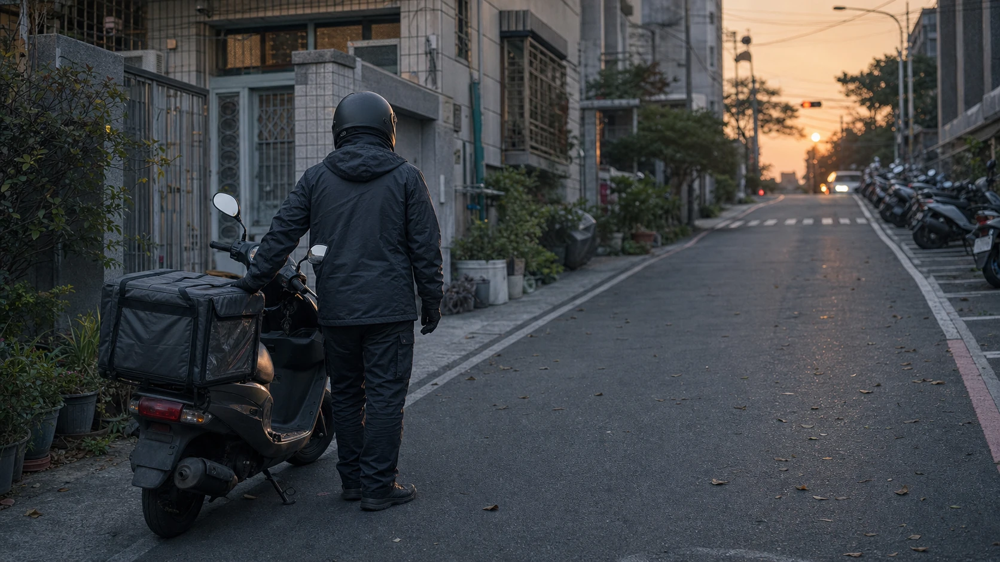

昨日入夜前，山頂漸漸起了大風。風從山路另一頭一陣陣吹過來，原本還能忍受的溫度，一下子便冷了許多。騎車在外頭跑，冷意總比站在屋裡來得直接，從袖口、領口一路鑽進身體，像是在提醒人，冬天真的到了。山上得多穿幾件才夠暖，只是那天的單量也不怎麼好，手機安靜得有些反常，等了好一會兒也沒幾張像樣的單。看著天色愈來愈暗，我便早早收工，回租屋處歇息。
跑外送久了，生活常被一張又一張訂單切成許多小段。今天去了哪裡、在哪個路口等了多久、送餐時遇見什麼人，有時候回到家便忘了；可也有一些畫面，明明只發生短短幾分鐘，卻會留在心裡很久。
隔日一早醒來，群組裡已經開始吆喝著大夥上線。有人說哪一區開始跳單，有人問今天的單價如何，大家一邊抱怨天冷，一邊還是戴上安全帽，各自回到熟悉的路上。我照例在租屋處附近買了森美漢堡，一樣的三明治，一樣簡單地解決早餐。近日總想把一天的餐費控制在兩、三百元上下，早餐吃個三明治，的確能省下一些。生活不是不能過，只是每一筆錢都得稍微算著，今天多花一點，明天便少用一些。
吃完早餐，手機一開，便開始接單。第一張滑開是榮總，送的是墩品棧。餐點放進保溫箱，拉好拉鍊，確認地址，發動車子，又是尋常的一天。一路上紅綠燈亮了又滅，車流停下再往前，城市像一部不停轉動的機器，每個人都有自己的方向。我們趕著把餐送到客人手裡，店家趕著出餐，上班的人趕著打卡，沒有人真的停下來看看，身旁的人正過著怎樣的一天。
中午時分，我送完福雅路上鄉林大自然一帶的小豪宅群。那裡的房子安靜整齊，門口的植栽修得漂亮，車道乾淨，連風似乎都比別處輕一些。送達後，我照著導航準備回程。騎到一個路口時，在對向的路邊看見了一位推著回收車的阿婆。
她走得很慢。
車上堆著紙箱、瓶罐和一些整理過的回收物，東西綁得並不十分整齊，隨著輪子經過不平的路面，輕輕晃動。阿婆身上穿得單薄，衣服看起來擋不住風。那天明明比前一晚還冷，我隔著外套都能感覺寒意，她卻只是低著身子，兩隻手扶著推車，一步一步往前走。
我已經騎過去了。在下一個十字路口等紅燈時，那個背影卻一直留在腦中。身旁的車一輛輛停下，號誌開始倒數，我本來應該繼續往下一個熱區走，看看能不能再接一張單。可心裡忽然冒出一個念頭：再繞回去看看吧。
綠燈亮起後，我沒有直走，而是轉了方向。
阿婆腳程不快，過沒幾個路口便又看見她。她仍推著那台沉甸甸的回收車，像是整座城市都在往前趕，只有她的時間走得特別慢。我把車停在路邊，打開車廂，伸手抓了一把零錢。那其實不是什麼了不起的數目，只是平常找零留下來的硬幣，放在掌心裡有些冰，也有些沉。
我走到推車旁，想先問候她幾句。可能老人家重聽，也可能路上的車聲太大，她沒有聽清楚我說什麼，只是有些疑惑地看著我。直到我把掌心攤開，將那些銅板遞到她面前，她才明白我的意思。她沒有多問，也沒有說很多話，只是慢慢伸手接下，然後對我笑了笑。
那個笑很淡，卻很真。
我跟她說：「愛呷飯喔。」
她像是終於聽見了，點了一下頭，回了一聲：「多謝哩。」
短短三個字，很快便被路口的引擎聲和風聲蓋過去。我回到車旁，重新戴好安全帽，發動機車。從後照鏡裡看見她繼續推著回收車往前，身影愈來愈小，最後被轉角與車流擋住。那一刻沒有發生什麼戲劇性的事，沒有人鼓掌，也沒有人拍照。她繼續走她的路，我也繼續跑我的單。
只是那一天，好像忽然多了一點不同。

我一早還在計算三明治能替自己省下多少餐費，擔心今天的單量夠不夠，想著油錢、房租以及下一餐要花多少；而她或許也在計算，這一車紙箱和瓶罐能換回多少錢。兩個原本毫不相干的人，都在為自己的生活奔走，只是在一個冷冷的中午，剛好於同一條路上相遇。
我不清楚她住在哪裡，也不知道她為什麼在這樣的年紀還推著回收車。也許這是她長久以來的生活，也許她只是想讓日子多一點餘裕。那些都不是我能替她回答的事。我只知道，那天的風很冷，她穿得很薄，推車很重，而我剛好看見了。
有時候也會在繁忙的十字路口遇見賣玉蘭花的大姐。她們站在車陣旁，趁著紅燈短短幾十秒，拿著一串串白色的花走近車窗。有人搖下玻璃，有人擺手，有人始終看著前方。綠燈一亮，人和車便散開了。今天遇見，明天未必還會在同一個地方；這一餐有了著落，下一餐又會如何，我們不知道，她們也只能繼續往下一個紅燈走。
城市裡有太多這樣的身影。他們不是新聞裡的大事件，也不一定有人記得他們的名字。他們只是安靜地出現在街角、市場、騎樓和紅綠燈旁，用自己的方法，把一天撐過去。有人彎腰整理紙箱，有人推著比身體還重的車，有人在寒風裡賣花。當我們忙著趕路時，他們很容易成為視線邊緣的一小部分；可只要真的停下來看一眼，就會發現每一道背影裡，都有一段不曾向人說完的人生。
那一把零錢並不能改變什麼。它未必足夠替阿婆解決明天的生活，也不可能讓她從此不必再推車出門。所謂幫助，很多時候都沒有想像中偉大。我沒有救了誰，也不該把短暫的伸手寫成自己的功勞。真正留在心裡的，是我原本已經騎過去了，最後卻願意繞回來；而她在明白我的意思以後，願意接下那份小小的心意，對一個陌生人笑了一下。
人與人的緣分，有時就是這麼短。我們可能一生只見過一次，甚至不知道彼此的名字。可在那幾分鐘裡，一個人被另一個人看見了。不是把她看成可憐的誰，也不是站在高處施捨，而是在各自辛苦的生活裡，認出對方同樣需要一點溫暖。那份溫暖很輕，輕得只是一句「愛呷飯喔」；卻也很重，重得足以讓人在後來想起時，心裡仍然微微發熱。
回到路上後，手機又響了，新的訂單跳進畫面。我按下接單，轉動油門，繼續往下一個地址前進。風還是一樣冷，路還是一樣長，生活沒有因為那次相遇突然變得容易。可是安全帽裡的我，一直記得阿婆收下零錢時的笑，也記得那一聲帶著台灣口音的「多謝哩」。
我們未必救得了眾生命，也解不了世間所有的苦。但願在自己還有能力的時候，不要吝嗇一次回頭；在看見別人辛苦的時候，願意多停留片刻。也許我們能給的真的不多，可能只是一頓飯的零錢、一句問候，或是在冷風裡把對方當成一個值得被好好看見的人。
至少在那一份當下，那段時光是暖的。
而那個冷冷的中午，阿婆推著回收車慢慢走遠的背影，也成了我的顧路人生裡，一段沒有地址、無法再次送達，卻始終留在心上的相遇。